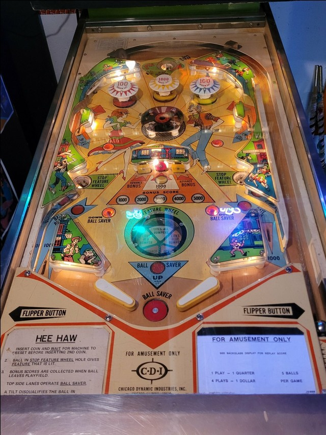

The lower half of the playfield is quite a dangerous place to be. Always try to shoot up to the top of the table by going to either side of the center target structure. Be sure to plunge the ball into the Stop Feature Wheel saucer, which will ideally light all 3 bumpers, instantly max out the bonus at 5,000 points, or open the right out lane gate. The flippers are often too strong to shoot the lower saucers directly. The center post between the flippers is raised by the upper side lanes and lowered by the rollover buttons near the slingshots.
The below picture of Hee Haw's playfield was taken from Pinside, where it is image #2692654.

The wheel set into the playfield just above the flippers will rapidly cycle which feature is lit. Landing in any of the game's 3 saucers scores 500 points as well as whichever feature is lit.
The lower left and lower right saucers are rather close to the flippers, and the flippers are often too strong to be able to shoot the saucer directly. It's more common for the ball to end up in a lower saucer off of a slingshot hit.
Just below the pop bumpers is a spinning disk with several posts that automatically spins at very high speed during a game. Hitting this structure scores no points, but causes the ball to fly away in an unpredictable direction.
The left and right targets in the center bank score 100 points and a bonus advance. The middle target in the bank scores 100 points, or 1,000 when the center pop bumper is also lit, but does not advance the bonus. These targets very frequently cause center drains and should generally not be shot at directly.
The upper side lanes score 100 points and raise the Ball Saver, a center post that completely blocks off the drain between the flippers. The post is lowered by pressing either of the Down Ball Saver buttons near the slingshots.
There are no in lanes. Full size 3-inch flippers back up directly to the slingshots, which score 10 points. Advancing the bonus to its maximum of 5,000 points lights an automatic kickback in the left out lane for the rest of the ball; it does not unlight when used. Earning Opens Gate from the Feature Wheel opens a free ball gate in the right out lane that directs the ball back to the shooter lane for a replunge; this gate does close when used. There is a Ball Saver center post between the flippers that is operated as described above.
Bonus is advanced 1,000 at a time with each hit to the left or right targets in the center 3-bank, or is instantly maxed out at 5,000 points with the Advance Bonus wheel award. The bonus is scored when the ball leaves the playfield. When the bonus is maxed, the left out lane kickback is lit and can be used repeatedly. There is no way to multiply the bonus or collect it mid-ball.
There is no extra ball feature or playfield Special. Tilt ends the ball in play only.